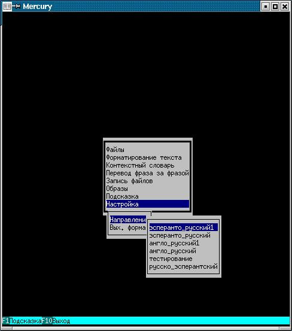
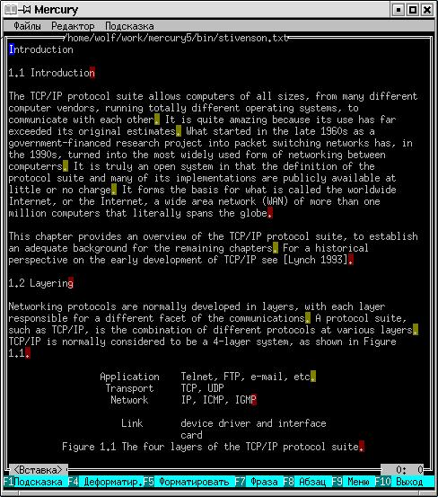
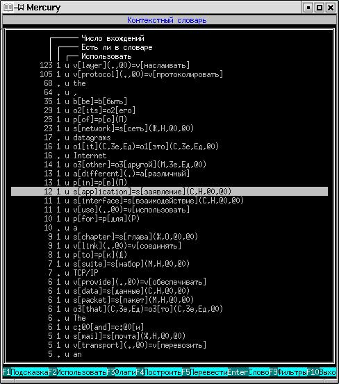
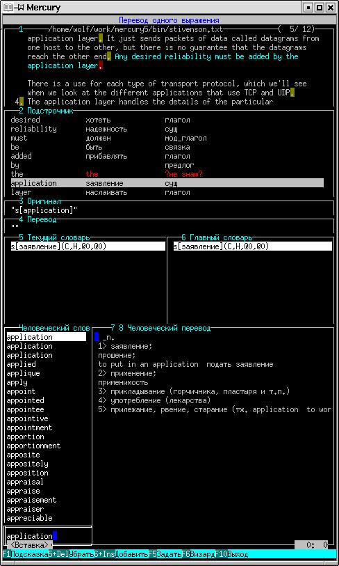
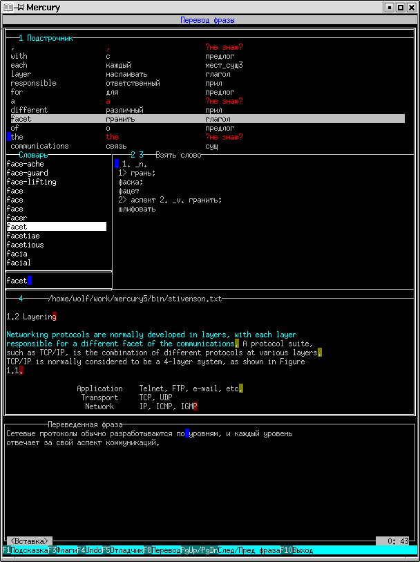

Д.В. Анисимов
Руководство для пользователя.
Содержание
1 Что такое язык и перевод и как "Правда" помогает переводу.
2 Как установить и как настроить программу "Правда".
2.1 Что должно быть на Вашей машине для работы "Правды".
2.2 Как установить
2.3 Как скомпилировать exe-шники
2.4 Параметры конфигурационного файла
2.5 Что еще надо настроить
2.6 Какие файлы для чего
2.7 Как удалить
3 Идеология интерфейса.
3.1 Цель
3.2 Как это выглядит и работает.
3.3 Как быстро научиться работать.
4 Окно подсказки и окно советов.
5 <<Старый>> и <<новый>> режимы.
6 Работа в старом режиме.
7 Работа в новом режиме.
7.1 Форматирование.
7.2 Словарь.
7.2.1 Стратегия.
7.2.2 Окно <<контекстный словарь>>.
7.2.3 Еще Словарь.
7.3 Фразы.
7.3.1 Стратегия.
7.3.2 Окно <<перевод фразы>>.
7.3.3 Окно <<варианты перевода слова>>.
7.3.4 Окно <<задать грамматическую форму>>.
7.4 Абзацы.
7.5 Образы.
8 Отладочные режимы.
9 Пардоны и извинения.
1 Что такое язык и перевод и как "Правда" помогает переводу.
Над проблеммой машинного перевода работают многие светлые головы. Результаты
пока так себе. Язык - это очень человеческая вещь, и по-этому он не только
трудно формализуем, он еще и субъективен. Дело в том, что каждый человек имеет
свой собственный язык. Да, все мы говорим на русском. Но у каждого человека он
свой. По-этому обьяснить программе, что от нее требуется при переводе, очень
сложно.
Язык - это система сигналов, которыми обмениваются люди, чтобы организовать
свою совместную деятельность. Сигнал - это короткое сообщение как морзянка или
флажковый семафор. Он не содержит полного содержания мысли, он содержит лишь
намек на мысль. Человеческий мозг с его огромной мощностью способен по этому
маленькому намеку эту мысль реконструировать. Вот только... в мозгу должна быть
картинка, образ того о чем идет речь, внеязыковые знания, знания о предмете
разговора, которые человек накапливал всю предыдущую жизнь.
Ни одна программа не обладает "внеязыковыми знаниями". По-этому - ни одна
программа "человеческого" перевода не делала и делать не будет.
А что же в этом случае должна делать программа? Инженерия - это "искусство
возможного". В программе "Правда" мы сузили задачу, подогнали решаемую задачу
под те возможности, которыми обладает современная техника.
Машинный переводчик может применяться в двух случаях - когда нужно получить
быстрый перевод "для прочтения", и кода нужно получить "письменный" перевод для
того, чтобы получился русский текст, который не стыдно показать другому
человеку.
В случае <<для прочтения>> - программа играет роль очень развитого словаря.
<<для прочтения>> не нужно формировать текст на языке перевода. А иногда и вредно.
Обычно Человеку сравнительно легко понять систему (грамматику) языка, но очень
трудно учить слова. "Правда" позволяет быстро (очень быстро) просматривать
переводы слов.
В случае "письменного" перевода программа тоже играет роль развитого словаря.
Но при этом могут быть полезными функции управления словарем. Для каждого слова
человек может выбрать, что это оно обозначает в данном тексте. Обычно, в тексте
одно слово имеет одно значение. Таким образом человек может помочь программе в
самой сложной проблеме - определении контекстного значения.
Программа может делать "грамматически связный" перевод. То есть она переводит
слова в соответствии со словарем и соединяет их в грамматически корректную
фразу. Для "удобных" языков (например Эсперанто) получается вполне нормальные
фразы, которые нуждаются лишь в небольшой коррекции. Для "неудобных" языков
(например английского) наша программа по-прежнему всего лишь очень развитый
словарь, с большим количеством функций.
2 Как установить и как настроить программу "Правда".
Я, конечно понимаю, что лучше когда программа "сама ставится". Но для этого
надо компьютеру как-то обьяснить что и как ставить, и что делать если возникла
непредвиденная ситуация. Ну, "как ставить", я еще могу написать, на каком-нибудь
скриптовом языке. А вот с непредвиденными ситуациями, пока еще лучше справляется
люди с их "ественным интеллектом". По этому - читайте маны, и делайте все руками.
Я пишу этот файл в ноябре 2005 года. Сейчас основным сайтом, с которого я раздаю
программу "Правда" является:
http://www.prawda.newmail.ru/
Оттуда можно взять:
prawda-0.4.0-dev.i386.rpm - rpm для Red Hat
prawda-0.4.0-dev.src.rpm - rpm с исходникам
prawda-0.4.0-dev.tar.bz2 - архив с исходникам
prawda-0.4.0-cpp.tar.bz2 - архив только с исходниками на С++ (без словарей и грамматики)
prawda-0.4.0-doc.tar.bz2 - архив только с документацией
2.1 Что должно быть на Вашей машине для работы "Правды".
- Какой-нибудь Юникс (у меня Red Hat 7.3, но были орлы, которые водружали
"Правду", например, на Альфу и Digital UNIX)
-
компилятор языка С++ (желательно gcc, но пойдет любой другой)
-
архиватор bzip2 и bunzip2
-
(девелоперская) библиотека X11 (вроде версия неважна)
-
русские шрифты (хотя бы один) в кодировке koi8
2.2 Как установить
Сейчас будет как у Задорнова - "Что и это не помогает?!!!". Не пугайтесь,
что описание длинное - это из-за описания всяких экзотических случаев.
Обычно достаточно просто сказать:
rpm -i prawda-0.4.0-dev.i386.rpm
Итак обо всем по порядку:
- Если у Вас стояла предыдущая версия <<Правды>> - удалите ее. (Умные люди
не удаляют, а <<прячут>>.) Удалить надо следующее:
- /.prawdarc - файл настоек
- /prawda (или куда Вы его там ставили) - каталог словарей и других
данных.
- деинсталировать rpm
-
Если у Вас не Red Hat, то переходите к пункту 3.
Если у Вас Red Hat, или что-то ему подобное, скачиваете rpm и ставите его
командой:
rpm -i prawda-0.4.0-dev.i386.rpm
-
Программа, конечно, поставится, но на некоторых машинах при запуске сразу
же получается SegFault. Это происходит из-за несоответствия версий libc.
Грамотно исправить эту ситуацию я не могу, но можно исправить неграмотно -
собрать исполняемые модули на Вашей машине. Для этого случая я держу отдельный
архив только с С++ исходниками. Делается это так:
- Скачиваете архив prawda-0.4.0-src.tar.bz2
- Разворачиваете
bunzip2 prawda-0.4.0.src.tar.bz2
tar xvf prawda-0.4.0.src.tar
- делаете make -f makefile.exe. Получите массу исполняемых файлов.
- Получившийся файл prawda и кладите в каталог /usr/bin
(остальные Вам не нужны)
- Должно заработать.
-
Если у Вас не Red Hat (не prm-based дистрибутив), то нужно собрать и установить
программу из исходников. Делается это так:
- скачиваете prawda-0.4.0.tar.bz2
- разворачиваете:
bunzip2 prawda-0.4.0.tar.bz2
tar xvf prawda-0.4.0.tar
- собираете:
make
Если не собралось, читаете следующую секцию.
- ставите:
make install
- Должно заработать.
2.3 Как скомпилировать exe-шники
В принципе достаточно дать команду make в каталоге src/bin.
По этой команде должно произойти следующее:
1) сделаться все исполняемые модули
2) разархивироваться все словари
3) оттранслироваться файл описания грамматики
4) сформироваться документация на С++ исходники, и описание грамматики
Если у Вас не получились экзешники, то это может быть по одной из следующих
причин:
1) Я не делаю automake и autoconf (не умею). По этому мой makefile настроен
исключительно на Red Hat 7.3. Если у Вас другая верия Юникса, другой
компилятор, или библиотеки ncurces и X11 лежат в другом месте, Вам придется
залезть в файл makefile.exe и поправить там переменные COMP, LINK и LDFLAGS.
2) У меня довольно древний gcc - 2.96. Новые версии компилятора значительно
строже, многие шалости, которые раньше были Warning-ами стали Error-ами.
Если у Вас возникла ошибка на этапе компиляции, пишите мне, больше тут
ничего не придумаешь.
2.4 Параметры конфигурационного файла
При первом запуске "Правда" пишет в Ваш домашний каталог настроечный файл
.prawdarc (обратите внимание на точку перед именем). Там хранятся настроечные
параметры программы:
path - каталог, в котором находятся все данные (грамматика и
словари)
size_x,size_y - размеры окна программы в буквах
font - шрифт, который использует иксовая версия "Правды"
RTFM - если этот параметр равен Yes, то программа при старте
дает полезный совет
Figna - если этот параметр равен Yes, то при неполном переводе
фразы пишется слово #фигня. Этот режим нужен для отладки.
rus - включить внутренний руссификатор. На некоторых машинах
моя программа почему-то отказывается понимать русскую
клавиатуру.
2.5 Что еще надо настроить
Поскольку "Правда" работает с русским языком, надо присвоить переменной
окружения LANG значение, соответсвующее русскому языку. У меня LANG = ru_RU.koi8r.
Кроме того на вашей машине должен бять хотя бы один русский шрифт в кодировке
koi8r. Задайте значение переменной font в файле /.prawdarc. Ну и это... когда
будете шрифт выбирать, выбирайте моноширинный (фиксированный) шрифт, иначе
выглядеть оно будет как... бред пьяного сисадмина.
2.6 Какие файлы для чего
Настроечные файлы
version - версия данных (должна соответствовать версии программы)
language.rc - языки, с которых возможен перевод
z_preproc.rc - перечисление имеющихся препроцессоров
(можно удалить, толку от них никакого)
z_man.rc - настройки препроцессора для UNIX-манов
Исходники
src - всякие С++ исходники
src/face - исходники отвечающие за интерфейс
src/trans - исходники отвечающие за ядро перевода
src/utils - исходники различных утилит, нужных для работы над переводчиком
Грамматика
grammar - исходники грамматики
grammar/english_russian - алгоритм англо-русского перевода
grammar/esperanto_russkij - алгоритм Эсперанто-русского перевода
В каждом этом каталоге файлы *.cpp *.h являются исходными.
lang.txt - описание алгоритма перевода с английского (Эсперанто) на
русский. Этот файл получается из исходников грамматики командой mklang
(лежит в каталоге grammar).
Словари
dicts - словари
grammar/english_russian - словари для англо-русского перевода
base_enru - основной словарь переводов
base_enru1 - словарь служебных слов
base_fverb - словарь фразовых глаголов
base_pre - словарь препроцессора
base_post - словарь постпроцессора
muller - словарь "для человека"
grammar/esperanto_russkij - словари для эсперанто-русского перевода
base_enru - основной словарь переводов
base_enru1 - словарь служебных слов
bokarev - словарь "для человека"
zform - словари, описывающие склонения и спряжения
english - английские словари словоизменений
esperanto - Эсперантские словари словоизменений
russkij - русские словари словоизменений
Прочее
doc - документация
html_grammar - исходнки грамматики, в виде html-файлов с гиперссылками.
Эти замечательные и удобные файлы делаются программий zmkdoc.
Если Вы будете редактировать описание граматики, то командой
zgrammardoc можно будет получить такой удобный гипертекст, в
котором относительно хорошо видно, что Вы там накуролесили.
html_src - мои "гениальные" С-шники, в виде html-файлов с гиперссылками.
Кхм... предупреждаю, что эти html-ки соответствуют
"Правде" v. 0.2.0 То есть несколько устарели.
help - онлайн-подсказка. Содержимое этих файлов показывается, когда
вы нажимаете кнопку F1. Тонкий юмор заключается в том, это
настоящий html и Вы его можете еще и браузером смотреть, если
вам это удобно.
latex - Сумма всех моих мыслей, относительно машинного перевода,
описание того, как это делалось, как это работает и как это можно
улучшать и развивать.
idea.ps - основная идея алгоритма машинного перевода, которую использует
"Правда".
lang.ps - язык описания грамматики. "Правда" - предельно гибкая система,
и ее можно "программировать" не будучи программистом. Вплоть
до того, что можно научить понимать ее другой язык (например
немецкий).
grammar.ps - описание грамматики (по сути, алгоритма перевода с
английского на русский).
esperanto.ps - описание алгоритма перевода с Эсперанто на русский.
source.ps - описание моих замечательных исходников (вдруг кому-то
захочется баги править).
interface.ps - мои взгляды, на то, каким должен быть интерфейс
программы-переводчика. Своего рода ЧаВо на вопросы, которые
мне задают желающие присоединиться к проекту.
other(readme) - вся остальная документация, которая не влезла в остальные
разделы.
src/bin - make-файлы и исполняемые программы
makefile - общий маке-файл
makefile.exe - маке-файл, делающий исполняемые модули (вызывается
из общего маке-файла)
makefile.doc - маке-файл, делающий документацию (вызывается
из общего маке-файла)
Исполняемые модули (делаются при компиляции):
prawda - терминальная версия переводчика
prawda_x - X-овая версия переводчика
Эти программы могут быть, а могут не быть (они нужны только
разработчикам):
zcompress2 - мой самодельный сжиматель словарей
zerolink - программа, тестирующая описание грамматики, которая
обнаруживает неиспользуемые конструкции
zfrasa_verb - программа, разжимающая словарь фразовых глаголов
zgrammardoc - программа, делающая гипертекстовое описание грамматики
zkod - кодировка win->koi->dos
zmkdoc - программа, делающая гипертекстовое описание сишников
ztest - программа, тестирующая описание грамматики на корректность
синтаксиса
zword_absend - программа, обнаруживающая в главном словаре слова,
которым не заданы способы склонения и спряжения.
src/obj - обьектные файлы (в первоначальный момет этот каталог пуст)
2.7 Как удалить
Если Вы ставили программу из rpm, то просто удалите rpm.
Если Вы ставили программу из makefile, то я поленился написать соответсвующий
скрипт. Поминаете меня недобрым словом, потом удаляете следующие файлы и
каталоги:
/usr/bin/prawda
/usr/bin/prawda_x
/usr/share/prawda
/usr/doc/prawda
/prawdarc (для каждого пользователя)
/prawda (для каждого пользователя)
3 Идеология интерфейса.
Программа "Правда" имеет несколько своеобразный пользовательский интерфейс.
Собственно для чего нужен интерфейс? Для взаимодействия с пользователем.
А что программа должна узнать от пользователя?
Есть следующие задачи, за которые отвечает интерфейс:
- Человек дает задание программе (в данном случае что переводить).
- Человек осуществляет подсказки программе, управляет процессом перевода.
- Исключительно вручную производится подчистка огрехов машинного перевода
и оформление результата.
В пунктах 1 и 3 "Правда" ничем не отличается от других программ.
Самый интересный второй этап.
Здесь используется "принцип 10% населения выпивает 90% пива". Программа сделана
так, чтобы она хорошо работала в наиболее частых (и простых) случаях. В сложных
случаях перевод все-равно берет на себя человек. Между этими двумя крайностями
(полностью автоматический и полностью ручной перевод) есть несколько градаций.
Каждая следующая градация передает несколько больше функций от машины человеку.
Мы стремились сделать так, чтобы то что программа делала сама, то что она может
делать сама. Но если человека это не удовлетворяет, человек может вмешаться.
Человек может углубиться в потроха управления программой настолько, насколько
сам захочет.
3.2 Как это выглядит и работает
Программа "Правда" имеет несколько своеобразный пользовательский интерфейс.
Сейчас такой стиль построения интерфейса несколько "немоден". Образцом для
подражания является несколько забытая сейчас программа "Нортон командер".
1
Имеются следующие особенности (их лучше назвать сразу, чтобы дальнейшее
изучение было проще):
- Интерфейс практически не настраивается (пардон).
- Никогда и низачем не используется мышка.
- Вся информация на экране изображается в виде текста.
- Экран представляет из себя одно или несколько окошек. Пользователь
не может варьировать размер окошек.
- Пользователь в каждый момент времени работает с одним окном.
- Все действия делаются либо через меню, либо через горячие клавиши.
Есть несколько соображений почему я выбрал именно такой стиль.
- Мышь (в данном случае) - это зло. Когда человек перекладывает руку с мышки
на клавиатуру и обратно он тратит время и устает. Работа только клавиатурой
намного быстрее.
- Мы занимаемся преобразованием текст в текст. По-этому графические элементы
не являются необходимыми. Единственным графическим обьектом являются рамки
окошек.
- Ну и программировать это проще. Настолько проще, что остается много времени
на сам перевод.
Конечно такой интерфейс имеет и недостатки. Его трудно изучать методом тыка.
Пользователь не может настроить его под свои привычки.
3.3 Как быстро научиться работать
У нас есть несколько принципов, которые полезно запомнить. Во всех режимах
имеются следующие закономерности:
- Окно состоит из окошек2. Окошко - это область прямоугольной формы, которое обведено
рамкой. Окошко всегда содержит заголовок, который обозначает назначение окна.
- Текущее окно обозначается двойной рамкой.
- Переключение между окнами делается клавишей Tab.
- Текущий элемент в окне обозначается инверсным цветом (черный текст на белом фоне).
- В некоторых режимах вверху есть меню. Попасть туда можно нажав F10.
- Функции развешаны на клавиши F1-F10, Стрелки, и всякие там Enter, Insert/
Delete и прочее. (Кнопки, на которые пользователь может нажимать не глядя)
Когда их не хватает используется нажатие с модификатором Shift Ctrl или Alt.
Правда модификаторы часто забирает себе WindowManager, по этому я ими не
злоупотребляю.
- Внизу (в самой нижней строке экрана) перечислены самые часто используемые
"горячие клавиши". Обычно там не хватает места для всех клавиш. Чтобы узнать
все работающие клавиши - читайте подсказку.
- Есть некоторые кнопки, которые имеют одинаковое значение во всех режимах:
Кнопка F1 всегда вызывает подсказку. Подсказка (как умеет :-) ) описывает
назначение текущего режима работы, и перечисляет работающие горячие клавиши.
Стрелки и кнопки Home End PageUp PageDown - хождение по текущему окну
(по тексту или списку).
Кнопки Esc и F10 - выход из текущего режима.
- Операций Undo (Отмена действия) и Redo (Сделать снова) отсутствуют.
4 Окно подсказки и окно советов.
Окно подсказки показывает подсказку. Каждая статья подсказки рассказывает
про какой-то режим. Статья состоит из трех частей:
1) Рассказ зачем нужен этот режим.
2) Что означает информация видимая на экране.
3) Какими кнопками какие действия можно делать.
Желтым цветом выделяется что-нибудь важное (например заголовки).
Зеленым цветом рисуются ссылки (гипертекстовые переходы). Чтобы перейти
по ссылке, надо навести на нее курсор стрелками, и нажать Enter.
Даже юниксоиды не читают маны, Чтобы рассказать пользователю о возможностях
программы при старте открывается <<окно советов>>. Это то же самое окно
подсказки, просто возникает оно в начале.
5 <<Старый>> и <<новый>> режимы.
Нынешняя версия несет печать некоторой неуверенности. Я не знаю насколько
приживется новая идеология перевода. Кроме того <<новые>> куски программы
несколько... подглюкивают. По этому сейчас программа работает в двух режимах -
<<старом>> и <<новом>>.
В старом режиме "Правда" - это такой ухудшенный <<квази-Стилус>>. Программа
переводит текст полностью автоматически. Человек может вмешаться только
когда перевод уже закончен. Программа конечно предоставляет некоторый сервис
(словарь, например). Но это уже полностью ручная работа.
Новый режим позволяет вмешаться в процесс перевода несколькими способами.
Самое главное преимущество - это создание словаря именно для переводимого
текста. Таким образом задача контекста изящно перекладывается на пользователя.
Изящно в том смысле, что пользователь тратит на это сравнительно мало усилий.
Кроме того, есть возможность сохранить структуру текста - разбиение его на
главы, абзацы, фразы и другие структурные элементы.
Кроме того, стало возможно в случае сложных фраз (когда программа запутывается),
конструировать фразу из переведенных фрагментов фразы (слов, словосочетаний и
даже придаточных фраз).
6 Работа в старом режиме.
Да че там. Потыкайтесь в менюшки, понажимайте F1 и все поймете. Возможностей
там по сути очень мало. F7 - перевод всего текста. F8-перевод текущей фразы.
Про все остальное не стоит и говорить :-) Назначение этого руководства - научить
людей работать в "новом" режиме.
7 Работа в новом режиме.

<<Правда>> - это переводчик мирового уровня. Но поскольку мировой
уровень находится... не очень высоко, то результат получился так себе.
Программа выполняет перевод по заданным правилам, но не понимает смысл.
Чтобы перевод получился хорошим, нужно сотрудничество <<естественного>> и
<<искусственного>> интеллектов. Оптимальная последовательность работы
такова:
- Перейти в "новый" режим. Делается это так Меню->Перевод->Перевести_по_нормальному.
- Прочесть текст из файла. (Я думаю не требует пояснений).
- Разбить переводимый текст на абзацы и фразы. Удивительно много
ошибок программа делает из-за того, что программа не понимает, где
кончается одна фраза и начинается следующая, и где в тексте
присутствует нетекстовая информация - формулы, текст на языке С++,
таблицы и т.д.
- Задать атрибуты абзацам и фразам. Текст - это не просто набор
слов, текст это структура. Даже хорошо переведенный текст
становится непонятным, если в нем убрать выделение заголовков,
перечислимые списки и т.п. Этот этап призван сохранить все это.
- Задать перевод словам текста. Слово в словаре может иметь
20-30 вариантов перевода. Чем словарь лучше, тем переводов больше.
Программа не может выбрать правильный вариант, но человек может
сказать программе, что слово в этом тексте имеет такое-то значение.
Задать контекст, так-сказать.
- Собственно перевод. Программа дает какой-то (довольно корявый)
начальный перевод фразы. Лучше воспринимать его как продвинутый
подстрочник. Чтобы текст стал нормальным - человек должен по нему
пройтись руками и убрать перлы типа "Сейчас мы пойдем на
демонстрацию, потом у нас будет митинг, посвященный классовому
подходу" (Имелось в виду использование классов в языке С++ :-) )
- Текущий сеанс сохранить/восстановить. Обычно сложный текст не
удается перевести за один рабочий день. Здесь Вы можете сохранить
текущее состояние программы, чтобы вернуться к нему завтра.
- Сохранить результаты перевода. Сохранить можно в формате
просто текст, LaTex или HTML.
Ниже даются рекомендации как лучше работать на каждом из этих этапов.
7.1 Форматирование.

В этом окне можно работать с "крупной" структурой текста и переводить
текст фраза за фразой. Крупная структура - это деление текста на
фрагменты крупнее фразы - абзацы, главы, подглавы и т.д.
Структура текста создается с помощью сущности "Абзац". Абзац - это
несколько (возможно ноль) фраз. При записи перевода в начале и конце
абзаца пишется несколько символов (тег). Этот тег позволяет получать
на выходе текст в некотором интересном формате. Сейчас можно получить
на выходе просто текст, ЛаТех или html.
Абзац имеет тип, который определяет как этот абзац будет переводиться
и форматироваться. Сейчас у нас есть следующие типы абзацев:
- Просто абзац
- Заголовок
- Преформатированный и непереводимый абзац
- Начало списка
- Элемент списка
- Конец списка
Пользователь может сам вводить новый тип абзаца или сделать новый тип
выходного формата. Для этого надо отредактировать файл absatz.txt
Работающие кнопки:
- Стрелки
Хождение по списку фраз и параграфов.
- Enter
Переход в окно "перевод фразы". Это окно представляет из себя
текстовый редактор, обвешанный всякими словарями на сколько только
возможно.
- Tab
Переключить отображение фраз на язык оригинала/перевода.
- Delete
Удалить абзац или фразу (Бывает нужно, когда при автоматическом
форматировании получается пустая фраза.)
- Insert
Вставить абзац. Обычно я вставляю начало и конец списка.
- F1 Подсказка.
- F5
Перестроить список абзацев и фраз в соответствии с новым
положением границ фраз и абзацев. Границы задаются в режиме
"форматирование". По идее эту кнопку надо нажимать один раз
при начале работы с текстом после того как в режиме
"форматирование" расставлены границы.
- F6
Редактировать флаги (признаки) текущего абзаца или фразы. Здесь
можно задать тип абзаца (заголовок, список, просто абзац) или
состояния фразы (надо переводить или нет; переводилась человеком,
программой, вообще не переводилась)
- F7
Перевести автоматически весь файл. При этом переводятся все
переводимые фразы, которые не были переведены человеком.
- F10 Выход
7.2 Словарь.
7.2.1 Стратегия.
Одной из проблемм машинного перевода (самой важной) является контекстное
значение слов. Чтобы программа переводила хорошо, нужно сказать ей, какое
значение слова нужно использовать. Для этого есть специальные средства,
которые описаны ниже.
Обычно одно и то же слово имеет в тексте одинаковое значение. (Понятно,
что к служебным словам это не относится.) По-этому мы можем один раз задать
значение слова в словаре и надеяться, что правильно поступили.
Слова присутствуют в тексте с разной частотой. Я начинаю задавать
значение начиная с самых частотных слов. Таким образом переведенный текст
быстрее становится понятным.
У нас есть два типа словарей. Словарь для машины и словарь для человека.
Словарь для человека - это обычный текст, который очень похож на книгу. Он
содержит словарные статьи в свободном формате, с пояснениями, примерами и прочим
<<мусором>>. На этот текст удобно смотреть, но машина его использовать не
может. В машинном словаре каждое словосочетание описано в специальном формате,
который содержит грамматическую информацию об каждом слове, входящем в это
словосочетание. Составление машинного словаря - довольно муторное занятие,
по-этому обьем машинного словаря гораздо меньше, чем человеческого.
Хочется чтобы работа со словарем была легкой и быстрой. Мне кажется, что
оптимально работать в следующем порядке:
- Присвоение словам начальных значений (первое значение, которое есть в
машинном словаре). Мы считаем, что словарь составляли умные люди, и в
большинстве случаев первым идет нужное значение. 3
- Для тех слов, у которых первое значение было неверное, можно
выбрать нужное значение из тех, что есть в машинном словаре.
- Если нужного значения в машинном словаре нет (или это слово вообще в
словаре отсутствует), то можно создать свое значение. Это имеет смысл
делать, если это выражение встречается много раз. Если один-два раза,
проще его уже на месте ввести вручную.
Как это делается конкретно описано ниже.
7.2.2 Окно <<контекстный словарь>>.

В этом окне можно удобно задать контекстное значение для слов этого
текста. Окно представляет из себя список выражений, про которые известно
следующая информация:
- Число вхождение в текст
- Есть ли в словаре
- Должно ли использоваться при переводе. (Задается человеком. Иногда
для настройки перевода полезно убрать "лишние" значения слов.)
- Само слово и его перевод на текущий момент времени
Список можно сортировать и фильтровать различными способами.
Ну и вообще, это окно позволяет понять о чем этот текст - вся
терминология (часто используемые слова) оказывается в начале списка.
В конце концов нужно задать перевод словам входящим в текст. Я это делаю
начиная с самых частых слов и как правило не дохожу до конца списка -
перевод слову, которое встречаются 1-2 раза я даю когда уже перевожу
фразу с этим словом.
Что здесь можно делать:
- F1
получить подсказку
- Enter
перейти в режим задания перевода выбранному слову
см главу <<Еще Словарь>>
- Кнопки Up Down Home End PageUp PegeDown
ходить по списку слов
- F2
поставить или снять флаг "использовать" текущему слову
- F4
построить список слов в соответствии с текущим разбиением
текста на фразы. Со словами, разумеется ничего не будет,
но вот выражения попавшие на границы фраз могут появиться
или исчезнуть. Например Cat is hot. Dog is cool. Если эти
фразы обьединить, то откуда ни возьмись появится hot dog.
И разумеется, если какие-то участки текста (абзацы и фразы)
делать непереводимыми, то слова из этих участков удаляются
из словаря.
- F5
задать словам начальный перевод (Каждому слову задается
первый вариант, присутствующий в словаре.)
- F9
установить режим просмотра списка - задать фильтры и сортировки
- F10
выйти из этого режима
Фильтры:
Фильтр - это признак слова по которому решается отображается ли слово
в списке. Фильтр имеет три состояния:
- Да - слово с этим признаком должно присутствовать в списке
- Нет - слово с этим признаком должно отсутствовать в списке
- Все - слово присутствует независимо от этого признака
Имеются следующие фильтры:
- есть ли в словаре
(имеется в виду главный словарь программы)
- задан ли перевод
задавал ли пользователь перевод этому слову
- укладывается ли в STRUCT1
STRUCT1 это в каком-то смысле <<стандартные>> конструкции, которые
присутствуют в описании грамматики (например прилагательное+
существительное). Нынешний интерфейс позволяет легко задавать
перевод таким конструкциям, даже если их нет в словаре. Если
выражение не укладыается в стандарт - ему тоже можно задать
перевод, но это потребует бОльших умственных усилий - синтаксис
словаря надо знать.
Порядок сортировки можно выбрать из следующих вариантов:
- По частоте
очень полезно чтобы понять <<о чем текст>> и сразу задать
перевод большинству слов.
- По алфавиту
бывает нужно когда в тексте есть слова, отсутсвующие
в словаре. Обычно программа воспринимает разные формы
одного слова как разные слова. При сортировке по алфавиту
формы одного слова обычно встают рядом.
- По части речи
тоже иногда бывает нужно :-)
7.2.3 Еще Словарь.

В этом окне можно (нужно) задать перевод выражения. В нынешней
версии программы "задать" пока еще слишком сложно. Пока средний
пользователь может лишь выбрать один (или несколько) вариантов перевода
из списка возможных. Интерфейс предоставляет максимум возможной информации
о переводимом выражении.
Вообще, что хочется знать при задании перевода:
- В каком контексте встречается это выражение?
- Какие варианты перевода есть?
- Что про это выражение рассказывает человеческий словарь?
В окне сверху вниз присутствуют следующие окошки:
- Исходный текст
Здесь виден исходный текст, в котором присутствует фраза, содержащая
переводимое слово. Эта фраза выделена цветом. Если это слово в тексте
присутствует несколько раз, то это окно позволяет просмотреть все
фразы, содержащие это слово.
-
Подстрочник
Это окно позволяет понять, смысл фразы, которую видите в окне
"Исходный текст". (Если вы хорошо знаете язык оригинала это окно Вам
не нужно, но я пользуюсь)
-
Само выражение
-
Варианты перевода в текущем и основном словаре.
То, что в текущем словаре программа использует при переводе. В этот
список можно добавлять/убавлять вариант из главного словаря. Можно
также добавить свой вариант перевода.
-
Человеческий словарь
Это окно позволяет видеть развернутую словарную статью, поясняющую
смысл выбранного слова. Информацию из этого окна программа не использует,
но это окно очень помогает человеку сориентироваться. Кроме того, можно
брать куски текста из словарной статьи и использовать их при создании
своего варианта перевода слова.
Подокон много и везде надо двигать курсор стрелками. Я придумал
следующий способ: одновременно нажимается стрелка и цифра, которая
сответствует номеру окна. Таким образом цифра играет роль модификатора
(ну как Alt, Shift или Ctrl)
Работающие клавиши:
- 1+Стрелки
Хождение по фразам, содержащим переводимое слово.
- 2+Стрелки
Перемещение курсора в окне "подсточник". При этом "человеческий"
словарь показывает перевода текущего слова в подстрочнике.
- Буквы или BackSpace
Набирать слово в "человеческом словаре". При этом словарь показывет
перевод набранного слова. Обычно необходимость здесь набирать слово
возникает, когда вы хотите понять смысл сложного слова оригинала.
Например немецкого слова Sneeballschlacht. Snee снег, Вall - мяч,
schlacht - сражение. Все вместе - игра в снежки.
- 5+Стрелки
Хождение по списку вариантов текущего словаря
- 5+Delete
Удалить выбранный вариант из текущего словаря
- 6+Стрелки
Хождение по списку вариантов главного словаря
- 6+Insert
Добавить выбранный вариант главного словаря в текущий словарь
- 7+Стрелки
Перемещение курсора в окне перевода "человеческого" словаря.
- 8+Стрелки
Выделение текста в окне перевода "человеческого" словаря. Выделение
делается для того, чтобы использовать выделенный кусок (строку) словарной
статьи при создании собственного варианта перевода.
- F1 - подсказка
- F5 - перейти в режим задание собственного варианта перевода
выражения. В этом режиме можно не выбирать вариант из существующих,
а задать его самому. Правда не всем это удается - формат словарной
базы надо знать :-)
- F10 Выход из этого режима с запоминанием текущего перевода.
- Esc Выход из этого режима без запоминанием текущего перевода.
7.3 Фразы.
7.3.1 Стратегия.
Вообще говоря программа делалась так, чтобы она сама могда делать перевод
фразы. По разным причинам это получается не всегда. Иногда фраза получается
корявой. Иногда вообще искажается смысл.
Программа может коверкать перевод следующими способами:
- Неверно определяет контекстное значение слов.
- Неправильно разобрать и сконструировать фразу
- Поставить слово в неправильную форму.
- Поставить слово в начальную форму (потому что в словаре не указано его
словоизменение)
Заставить программу переводить правильно я не могу, но есть средства
полуавтоматического (полуручного) перевода.
Я рекомендую такую последовательность действий. Контекстное значение слов
должно быть задано до того - в режиме <<контекстный словарь>>. Сначала
попробуйте перевести автоматом, может программа сразу переведет нормально.
Попробуйте сформировать фразу из готовых блоков. Можно взять из подстрочника
довольно длинное выражение, поставить его в нужную форму, и вставить в фразу.
И все равно в конце может потребоваться ручная правка. Такую вещь как стиль
должен поддерживать человек.
Конечно, бывают случаи, когда просто глупо надеяться, что программа может
справиться с переводом. Вот например был такой случай.
Банка с краской, японского производства. Судя по звуку, там внутри
какой-то раствор, а в нем - твердые, довольно крупные шарики. И перед
использованием надо все это дело энергично потрясти - так, чтобы шарики
превратились в песочек. Естественно, понимаешь это исключительно по
звуку. По-японски это сформулировано так, буквально: "Трясти, пока звук
"КАРА-КАРА" не сменится звуком "КОСЯ-КОСЯ". Кто скажет, что это непонятно,
пусть первый бросит в меня камень. Но как это написать в инструкции на
русском языке??"
7.3.2 Окно <<перевод фразы>>.

Окно этого режима состоит из следующих окошек:
- Подстрочник (тут каждому слову дан перевод)
- Словарь (тут содержится подробная слварная статья выбранного слова)
При хождению по подстрочнику (по словам фразы), это окно показывает
словарную статью выбранного слова.
- Исходный текст. Кусок текста вокруг переводимой фразы. Сама фраза
подсвечена голубым цветом.
- Перевод фразы. Тут надо писать перевод фразы.
Подокон много и везде надо двигать курсор стрелками. Я придумал
следующий способ: одновременно нажимается стрелка и цифра, которая
сответствует номеру окна. Таким образом цифра играет роль модификатора
(ну как Alt, Shift или Ctrl)
Верхние три окошка - информационные, нижнее окошко - рабочее. Переключение
между ними происходит по кнопке Tab. Текущая часть показывается двойной
рамкой.
Работающие клавиши:
- Просто Стрелки
Перемещение курсора в окне переводимой фразы.
- 1+Стрелки
Перемещение курсора в окне "подсточник". При этом "человеческий"
словарь показывает выбранне слово.
- 1+Enter
Переход в окно, в котором можно выбрать преревод данного слова.
Далее этому переводу (слову или словосочетанию) можно задать
грамматическую форму. И далее, этот перевод вставляется в окно
фразы в текущую позицию курсора.
- 2+Стрелки
Перемещение курсора в окне перевода "человеческого" словаря.
- 3+Стрелки
Выделение текста в окне перевода "человеческого" словаря. Выделенный
текст можно потом вставить в переводимую фразу.
- 3+Insert
Вставить выделенный кусок из человеческого словаря в переводимую фразу.
- 4+Стрелки
Двигать исходный текст.
- BackSpace
Укоротить слово в человеческом словаре. (Удалить последнюю букву
переводимого слова.)
- Просто Буквы
Вводить слово в человеческом словаре.
- F3
Переход в окно "Структура источника"
- F4
Переход в окно "Структура приемника"
- F5
Переход в окно "Отладчик"
- F7 и F8
Перевод фразы главным (F7) или контекстным (F8) словарем. При переводе
с английского эта кнопка только мешает. При переводе с Эсперанто -
получается умеренно корявая фраза, которую можно лишь немного подредактировать.
- F10
Выход (Возврат в окно "Список абзацев и фраз")
7.3.3 Окно <<варианты перевода слова>>.
В этом окне можно выбрать вариант перевода слова. Программа дает список
вариантов того, как можно перевести i-е слово фразы. В списке есть не
только перевод этого слова, но и выражений (словарных групп), которые
начинаются с этого слова. Например так очень удобно вставлять в текст
выражения типа "Рабоче-крестьянская красная армия".
Работающие клавиши:
- Стрелки вверх-вниз
Выбрать вариант перевода слова.
- Enter
Вставить то, что выбрано в переводимый текст. Перед тем, как
выражение вставится в текст, ему нужно будет задать грамматическую
форму.
- F1
Получить подсказку
- F10
Выход (Возврат в окно "Варианты перевода слова")
7.3.4 Окно <<задать грамматическую форму>>.
В этом окне можно задать грамматическую форму слову или выражению
перед тем, как вставить его в текст. Можно, конечно вставит его и так,
(в начальной форме) и потом редактировать, но когда выражение длинное,
лучше действовать "по-науке".
Стрелками влево-вправо выбирается задаваемый параметр, стрелками вверх-
вниз - задается значение текущему параметру.
То, что получается в результате текущего значения параметров
(результирующая строка) показывается в виде списка. Совершенно не
обязательно задавать все параметры до единого. Если у Вас получилась
правильная строка, вставляйте ее в текст.
Работающие клавиши:
- Стрелки влево-вправо
Выбрать изменяемый грамматический параметр.
- Стрелки вверх-вниз
Задать значение параметра.
- Enter
Вставить то, что получилось в переводимый текст.
- F1
Получить подсказку
- F10
Выход (Возврат в окно "Варианты перевода слова")
7.4 Абзацы.
После того как перевод сделан, его надо записать в выходной формат. Это
конечно, не главная проблемма, но тем не менее не хочется тратить лишних
усилий на второстепенную работу.
Сейчас "Правда" умеет формировать следующие выходные форматы: просто текст,
LaTex, HTML. Разумеется, пользователь может захотеть получить файл в другом
формате (например RTF). Сделать это можно следующим образом:
1) внести новый файл в каталог etc/format
2) внести в файл format.rc новую строчку, описывающую этот формат
Кроме того, можно в существующий формат внести новый тип абзаца.
Файл описания абзацев оцень простой. Одна строка - это один тип абзаца.
Например вот как описан заголовок формата HTML.
@absatz{@Color{0x0f}@not_trans{0}@Name{Заголовок}@begin{<h>}@end{</h>}}
| absatz | просто ключевое слово |
| Color{0x0f} | цвет этого абзаца при работе в программе "Правда" |
| not_trans0 | признак, что надо транслировать |
| Name{Заголовок} | как этот тип абзаца называется |
| begin{<h>} | что пишется в начале этого абзаца |
| end{</h>} | что пишется в конце этого абзаца |
Вот как описан заголовок формата LaTex.
@absatz{@Color{0x0f}@not_trans{0}@Name{Заголовок}@begin{\subsection{}@end{\}}}
Обратите внимание, что закрывающую фигурную скобку надо "закавычивать"
с помощью обратной косой черты.
7.5 Образы.
Этот кусок программы несколько недодуман. То есть я пока не знаю, как
пользователи захотят это применять.
Образы бывают трех типов:
- Все данные сеанса.
- Контекстный словарь.
- Образ текста. (Все данные об абзацах и фразах, все фразы и их перевод)
Образ текста + Контекстный словарь = Все данные сеанса.
Понятно, что любой тип образа можно читать и записывать. Понятно, что можно
записать все данные сеанса, и завтра продолжить работу над переводом.
Есть проблема, которую я не могу додумать до конца. Если нужно переводить
несколько текстов на одну и ту же тему, то хочется сохранить контекстный словарь
полученный при работе над одним текстом и использовать его при работе со
следующим текстом. Я не знаю, как обьяснить пользователю, что происходит
(что должно происходить) внутри программы в этом случае.
Можно было бы на это плюнуть. Но очень хочется чтобы программа становиласть
<<умнее>> в процессе работы. Использование с образом контекстного словаря в
принципе дает такую возможность. Причем дает ее "изящно" - на человека не
возлагается дополнительной работы.
8 Отладочные режимы.
Никому кроме меня не нужны :-)
9 Пардоны и извинения.
Программы бывают либо надежные, либо революционные. Версия <<Правды>> 0.4.0 -
<<революционная>>. Это значит, что в ней присутствует сравнительно много нового
кода (который содержит сравнительно много ошибок). И самое главное - я не знаю
насколько новые функции будут полезны пользователю и какие методы работы
лучше всего применять при работе с моей программой. За все это я прошу пардону,
и надеюсь, что пользователи помогут мне сделать следующие версии лучше.
Я надеюсь, что скоро выйдет версия 0.4.1, которая будет содержать много
исправлений, и с которой можно будет работать.
Footnotes:
1 Есть более современные аналоги этой программы - Far для Windows
и MidnightCommander для Unix.
2Не знаю как по русски слово frame. Не писать
же <<форточка>>
3На самом деле
это не так. Я не знаю, чем руководствуются составители словарей, когда
упорядочивают варианты перевода. Но я не Мюллер - не могу еще и словари
составлять.
File translated from
TEX
by
TTH,
version 3.70.
On 25 Oct 2005, 23:29.
(Ага, и вручную пришлось делать содержание, потому что содержание русскими буквами энтот TtH не понимает)